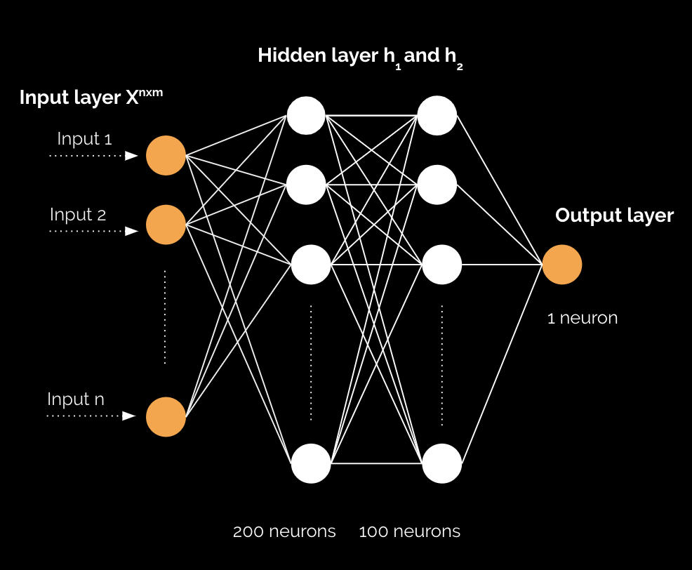
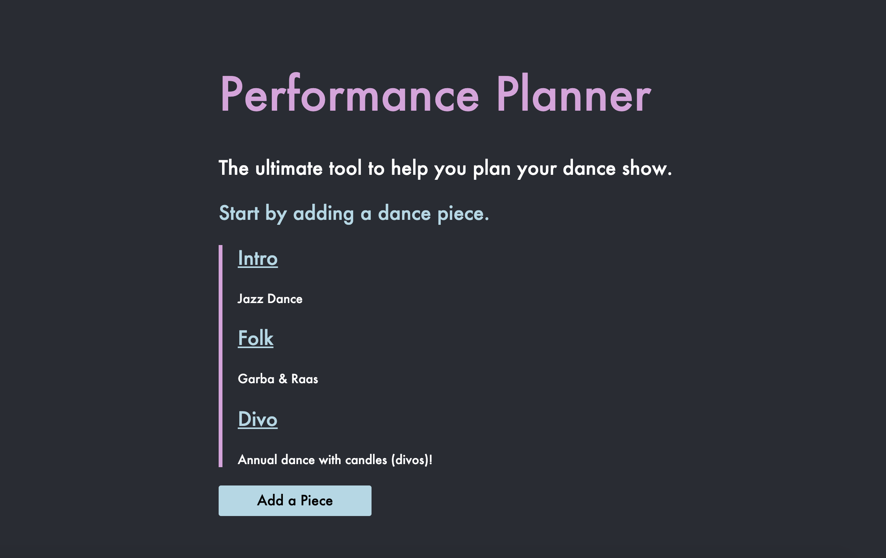
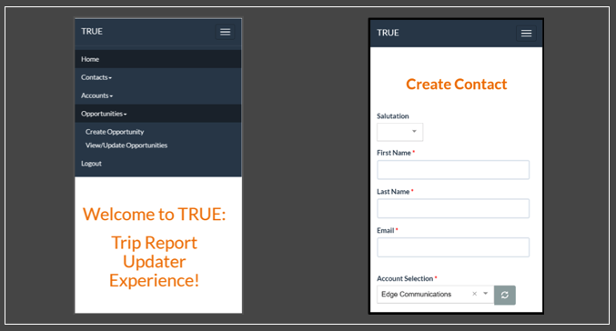
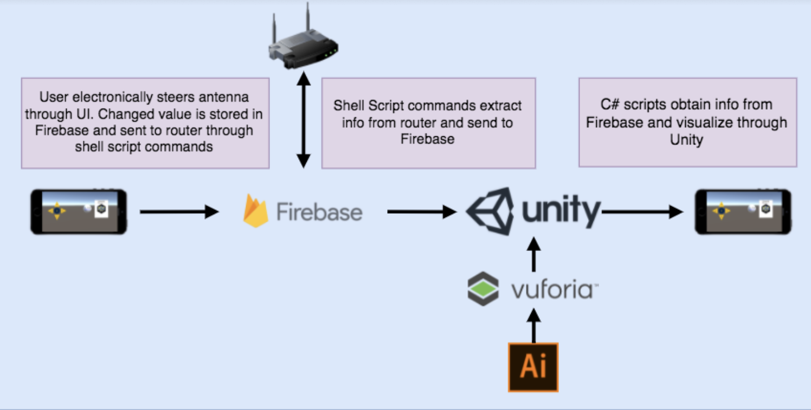

About Me
Hello! My name is Saloni Purswani. I’m an aspiring software engineer, and a senior at Drexel University pursuing my Bachelors in Computer Science. I enjoy learning about and building creative software that ultimately makes a task feasible or easier.
Through my academics, my focus has been on Artificial Intelligence and Human-Computer Interaction. I’m fascinated by AI, ML and other emerging technologies and how they have created room for engineers to innovate.
HCI personally draws me in because I believe user experience is more important than it ever has been, as the look & feel and performance can mean all the difference in an app's success.
To focus on my two areas of interest, I’m currently working to learn and apply cloud technologies to applications and front-end frameworks to new projects.
Fun fact: Right before this picture was taken, I was awarded Valedictorian of my High School class! (My only solo photo from that night ended up with my medal flipped backwards 🙃)
Experience
Dell Boomi Runtime Team
Software Engineer Co-op
April - Sept 2019
- Designed and developed cloud migration utility, alongside a team of 10 engineers, to migrate 1,000’s of Boomi clients’ processes and data to a newly hosted Cloud in AWS
- Implemented asynchronous REST API utility in Java for lift & shift of process data as part of cloud migration initiative
- Actively participated in Agile Scrum meetings, as a member of the team focused on the runtime engine of the Integration platform
Dell Boomi Emerging Technology Team
Product Developer Co-op
April - Sept 2018
- Implemented prototype for IoT Integration solution to optimize fuel usage for a overseas shipping company
- Developed a listener integration process utilizing MQTT to receive telemetry data every 30 seconds
- Pitched to C-executives of Alleantia (Dell Boomi IoT partner)
- Architected and developed Java application for facial recognition kiosk POC, using AWS services including Lambda, S3, Rekognition and DynamoDB
- Created prototype Boomi platform functionality for businesses to provide personalized experiences with facial recognition systems
Projects
Predicting COVID Deaths using Regression
A model that predicts a country’s death count given the number of cases, tests, and various other factors including the population density and stringency index.
The training process includes a neural network with two hidden layers.
Python + Pytorch + Matlab
Performance Planner
A web app that allows dance groups to organize performance related data such as music tracks, videos, program, and costumes.
Includes a timeline for dance pieces and a costume log to track costumes usage.
HTML + CSS + JS + Flask + SQL
TRUE: Trip Report Updater Engine
A web/mobile application to interface specific Salesforce capabilities (such as creating and updating opportunities,
contacts and accounts) for System Engineers at Dell EMC.
HTML + CSS + Boomi Flow + Salesforce API
AR Router Visualization App
Allows users to retrieve real-time router information (including devices connected, internet speed and strength)
through an augmented reality based iOS app.
C# + Unity + Firebase + Bash
Organizations
When I’m not working on software or attending class, my time at Drexel is usually spent pursing my interests in two organizations: Drexel Women in Computing Society (WiCS) and PENNaach.
I have been involved with WiCS since 2016 and currently am the VP of Public Relations for the 2020-2021 school year.
WiCS is a strong, empowering community that celebrates women in tech, and offers the opportunity for students to make connections and learn about pursuing their interests in the field.
WiCS’ mission speaks to me and I’m glad help other girls like me, in navigating the tech industry.
Since 2017, I have been a dancer and choreographer on PENNaach, a female South-Asian fusion dance team.
Every year in February, my team and I put on a themed show with about 10 performances of various styles.
This platform has not only provided me the ability to express myself through dance,
but has also given me my greatest friends and the opportunity to evolve personally.
Through PENNaach, I can be creative with my choreography, lighting, music and costumes, and also learn what it means to oversee a project from start to finish.
Below are a few pictures from our last show and photoshoot.
Check out one of our most dazzling performances here!